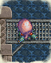
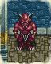

YS I･II complete
YS II compete
| 概要 | 情報 | ボス戦 |
| アイテム一覧 | 敵キャラ一覧 | 攻略チャート |
| マップ | Ys II 攻略へ |
| 名前 | 画像 | HP | 攻撃 | 防御 | 経験値 | 所持金 | レベル | 出現場所 | メモ |
| CRASE | 20 | 20 | 6 | 5 | 8 | 2 | ムーンドリア | ||
| CURKSHARN | 30 | 32 | 10 | 5 | 10 | 4 | ムーンドリア | ||
| GODARGO | 50 | 56 | 28 | 6 | 12 | 8 | ムーンドリア | ファイヤーの魔法が効かない | |
| WOLOZOUL | 40 | 36 | 20 | 7 | 12 | 6 | トール | ||
| NOMESS | 50 | 44 | 20 | 7 | 12 | 6 | トール | ||
| ZOLGEL | 72 | 80 | 22 | 8 | 14 | 8 | トール | ||
| LYPLATE | 70 | 50 | 24 | 8 | 16 | 8 | ラスティーニ | ||
| TOLPY | 70 | 70 | 25 | 9 | 16 | 10 | ラスティーニ | ||
| 名前 | 画像 | HP | 攻撃 | 防御 | 経験値 | 所持金 | レベル | 出現場所 | メモ |
| PULOYD |  |
84 | 90 | 26 | 10 | 16 | 12 | ラスティーニ | |
| CNOCKS | 80 | 84 | 32 | 12 | 20 | 12 | ラスティーニ最下層 ジラの家地下 |
||
| CULLY | 80 | 96 | 40 | 13 | 20 | 12 | ラスティーニ最下層 ジラの家地下 |
||
| OLHAROS |  |
108 | 108 | 50 | 15 | 25 | 14 | ラスティーニ最下層 ジラの家地下 |
とにかく強い |
| NIELI | 100 | 112 | 52 | 15 | 30 | 18 | ノルティア | ||
| GELKALD | 100 | 120 | 54 | 16 | 35 | 18 | ノルティア | ||
| EGNYD | 120 | 136 | 56 | 17 | 48 | 20 | ノルティア | ||
| GULGATA | 110 | 116 | 64 | 18 | 50 | 20 | ノルティア | ||
| 名前 | 画像 | HP | 攻撃 | 防御 | 経験値 | 所持金 | レベル | 出現場所 | メモ |
| 名前 | 画像 | HP | 攻撃 | 防御 | 経験値 | 所持金 | レベル | 出現場所 | メモ |
| GWORDER |  |
120 | 127 | 58 | 18 | 60 | 22 | ノルティア | |
| SVOFF | 132 | 148 | 70 | 20 | 65 | 22 | ノルティア | 氷の坂も上ってくるので注意 | |
| PRELIGURD | 120 | 150 | 80 | 22 | 70 | 24 | バーンドブレス | 姿を消す特技あり | |
| ONUMAN | 120 | 160 | 84 | 24 | 75 | 24 | バーンドブレス | ||
| SCORLUN | 144 | 172 | 86 | 26 | 72 | 24 | バーンドブレス | ||
| ZELVENORCE | 150 | 184 | 90 | 32 | 88 | 26 | バーンドブレス | ||
| JYN | 180 | 200 | 96 | 34 | 100 | 28 | バーンドブレス | ファイヤーの魔法が効かない | |
| DILGA | 130 | 152 | 94 | 28 | 78 | 24 | バーンドブレス | ||
| 名前 | 画像 | HP | 攻撃 | 防御 | 経験値 | 所持金 | レベル | 出現場所 | メモ |
| TOPS |  |
130 | 168 | 88 | 30 | 82 | 24 | バーンドブレス | |
| MAGNUTO | 156 | 188 | 94 | 34 | 90 | 26 | バーンドブレス | ファイヤーの魔法が効かない 遠距離攻撃あり |
|
| XAEROT | 250 | 370 | 230 | 130 | 270 | 46 | サルモン入り口 | ファイヤー魔法が効かない ゲーム中最強クラス |
|
| ASHVERL | 180 | 192 | 84 | 35 | 110 | 30 | ハダル、ジェンマ、メサ管区 | ||
| BAOCHAR | 185 | 196 | 80 | 38 | 100 | 30 | ハダル、ジェンマ、メサ管区 | 遠距離攻撃あり | |
| NASHZAL | 190 | 196 | 96 | 44 | 115 | 30 | ハダル、ジェンマ、メサ管区 | ||
| MALOQUOS | 200 | 204 | 106 | 65 | 160 | 34 | トバ、ダビー管区 | 遠距離攻撃あり | |
| ALLOMOD | 205 | 212 | 108 | 72 | 180 | 34 | トバ、ダビー管区 | ファイヤー魔法で吹き飛ばされない | |
| 名前 | 画像 | HP | 攻撃 | 防御 | 経験値 | 所持金 | レベル | 出現場所 | メモ |
| 名前 | 画像 | HP | 攻撃 | 防御 | 経験値 | 所持金 | レベル | 出現場所 | メモ |
| TOROBER | 205 | 220 | 112 | 78 | 200 | 34 | ダビー管区 | ||
| GODOLEB | 210 | 224 | 125 | 88 | 220 | 36 | トバ、ダビー管区 | ||
| EL ENDEATH | 190 | 200 | 90 | 52 | 120 | 32 | ファクト管区 | ||
| NUSTARL | 195 | 196 | 96 | 56 | 130 | 32 | ファクト管区 | 遠距離攻撃あり | |
| BEAROT | 198 | 204 | 100 | 62 | 150 | 32 | ファクト管区 | ||
| DELPASS |  | 208 | 236 | 114 | 82 | 200 | 36 | トバ管区地下 | タコ |
| DIPHTHELOYD |  |
205 | 240 | 116 | 96 | 210 | 38 | ファクト管区地下 | 超広範囲のブレスに注意 |
| CAREBISS |  |
240 | 272 | 140 | 116 | 255 | 42 | 東翼地下 | 姿を消す特技あり |
| 名前 | 画像 | HP | 攻撃 | 防御 | 経験値 | 所持金 | レベル | 出現場所 | メモ |
| REWILLVAN | 220 | 252 | 126 | 108 | 240 | 40 | 西翼、東翼 | ASHURA BODY ! | |
| FORCLESS |  | 220 | 244 | 122 | 104 | 240 | 40 | 西翼、東翼 | 遠距離攻撃あり ファイヤー魔法で吹き飛ばされない |
| GEAROT | 230 | 260 | 135 | 112 | 250 | 42 | 東翼 | ファイヤー魔法で吹き飛ばされない | |
| CHARONT | 240 | 280 | 150 | 122 | 260 | 44 | 西翼 | ファイヤー魔法が効かない 遠距離攻撃あり |
|
| BALKILEA | 245 | 300 | 170 | 126 | 260 | 44 | 西翼 | ||
| Zava as | 250 | 280 | 134 | 110 | 270 | 42 | トバ、ジェンマ、メサ管区 鐘撞堂 |
ファイヤー魔法が効かない | |
| 名前 | 画像 | HP | 攻撃 | 防御 | 経験値 | 所持金 | レベル | 出現場所 | メモ |
| 概要 | 情報 | ボス戦 |
| アイテム一覧 | 敵キャラ一覧 | 攻略チャート |
| マップ | Ys II 攻略へ |
YS II eternal
YS I･II complete
YS II compete
| 目次へ戻る | ページの上部へ |